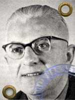

Gerrit Achterberg (1905-1962)

'Zij kent de onderkant van kast en ledikant,
ruwhouten planken en vergeten kieren,
want zij behoort al kruipend tot de dieren,
die voortbewegen op hun voet en hand.'
(uit: 'Werkster' 1949)
Biografie en korte Bibliografie :
Achterberg was de jongste zoon uit een boerengezin vol traditionele
geslotenheid, feodale horigheid en calvinistisch Christendom.
Hij studeerde aan de Jan van Nassau-kweekschool te Utrecht en
werd achtereenvolgens onderwijzer in Utrecht.
In december 1937 doodde hij in een vlaag van verstandsverbijstering
zijn hospita met pistoolschoten. Hij meldde zich uit eigen beweging bij
de politie, maar werd na zes maand preventieve hechtenis ingesloten
in het rijksasiel voor geestesgestoorden te Avereest/Overijssel.
(zie gedicht)
Na zijn ontslag uit deze inrichting stond hij nog jarenlang onder toezicht.
In 1946 huwde hij Katrien van Baak, die hij al kende uit zijn onderwijstijd
in Opheusen.
Op 17 januari 1962 kreeg hij in de auto, waarmee hij van een televisie-avondje
in een buurtcafé terugkeerde, een hartaanval. Hij overleed ter plaatse.
Zijn laatste levensjaren waren gelukkiger geweest door de erkenning van zijn
dichterschap. Hij heeft zich door zijn poëzie gerehabiliteerd: "Maar leg als
laatste wat gij doet al mijn gedichten aan mijn voet, krachten waarmee ik
opstaan moet."
De bijna duizend gedichten van Achterberg verschenen tussen 1931 en 1962
in afzonderlijke bundels (met soms vreemde titels als Osmose, Limiet, Radar, ...)
Zij werden door de schrijver samengebracht in vier delen: Cryptogamen,
Oude Cryptogamen, Cryptogamen III en Cryptogamen IV.
Een van de vele gedichten ...
Directeur
Van morgen heb ik hem zien fietsen door de lanen.
zijn bril flikkerde in de zon.
er schoot een scherpte door mijn ingewanden,
omdat hij mij gevangen houden kan
zo lang hij wil, want duizend wegen
leiden naar Rome, één verkeerd gekozen woord
staat nog de zelfde avond in 't rapport
en blijft bewaard tot aan het eind der tijden.
Onmacht en rechteloosheid ontbinden
de ziel, die langzaam onpersoonlijk wordt.
Zo zal ze beter passen in het blinde
systeem van kaarten, dat zijn tafel torst.
Verraden krachten richten zich op deze
mens met het enige tekort:
dat hij me zo lang zal genezen
tot ik me op hem stort (*).
*In samenspraak met de directeur van Gerrit's inrichting werd
dit laatste vers veranderd in "tot ik een ander word".
Omdat ik niet van censuur hou, want dat is het uiteindelijk, heb ik dit
onveranderd gelaten. |